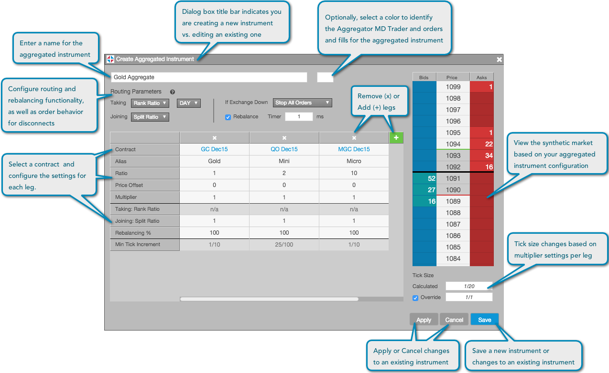

Use the Aggregator configuration interface to configure and control the behavior of the aggregated instrument as it trades. After adding products to your aggregated instrument, configure the optimal aggregated instrument parameters based on your trading needs.
You can open the Aggregator configuration interface by clicking the +Create button or the edit icon in the Aggregator widget when creating or modifying an aggregated instrument.
